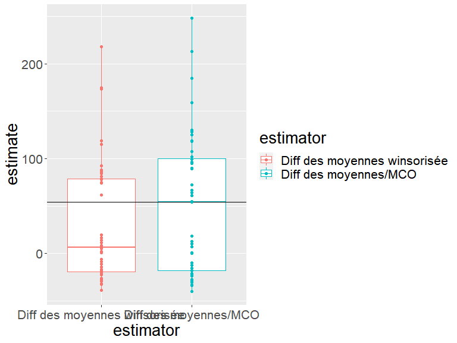
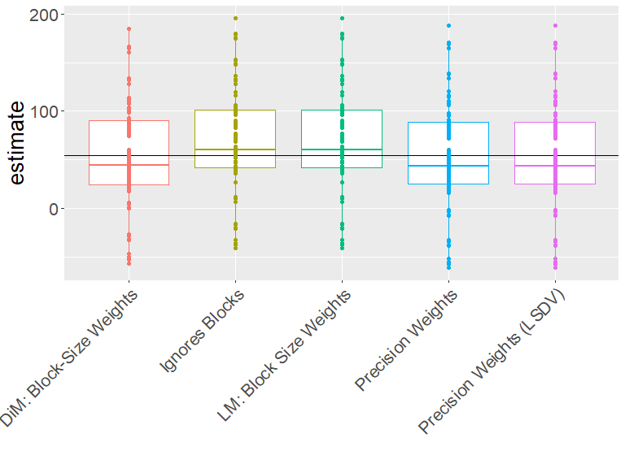
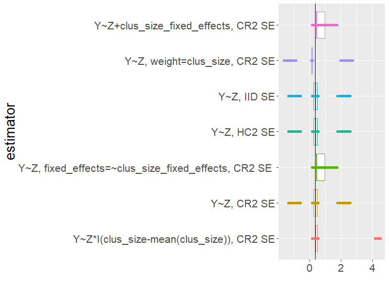
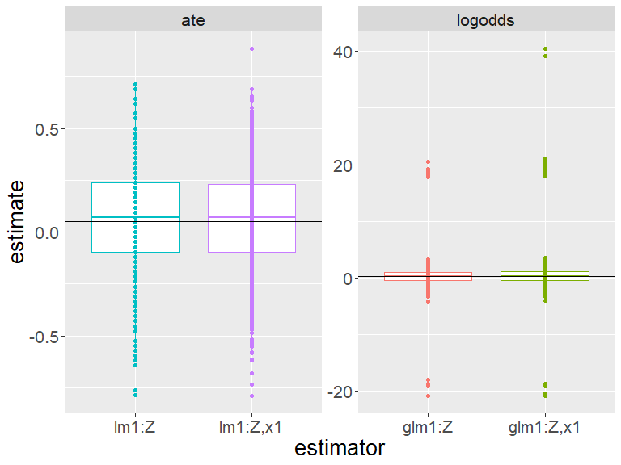

Un effet causal, \(\tau_i\), est une comparaison des résultats potentiels non observés pour chaque unité \(i\) : exemples \(\tau_{i} = Y_{i}(T_{i}=1) - Y_{i}(T_{i}=0)\) ou \(\tau_{i} = \frac{Y_{i}(T_{i}=1)}{ Y_{i}(T_{i}=0)}\).
Pour en savoir plus sur \(\tau_{i}\), nous pouvons traiter \(\tau_{i}\) comme un paramètre ou une quantité cible à estimer (discutée ici) ou comme quantité cible hypothétique (voir module sur les tests d’hypothèses).
Beaucoup se concentrent sur l’effet moyen du traitement (average treatment effect, ATE), \(\bar{\tau}=\sum_{i=1}^n\tau_{i}\), en partie parce qu’il permet une estimation facile.
La clé de l’estimation pour l’inférence causale consiste à choisir un paramètre qui vous aide à en savoir plus sur votre question théorique ou politique. Ainsi, on pourrait utiliser l’ATE mais aussi d’autres paramètres courants tels que l’effet d’intention de traiter (intent to treat effect, ITT), l’effet moyen local du traitement (local average treatment effect, LATE), l’effet causal moyen pour ceux qui se conforment au traitement (complier average causal effect, CACE), l’effet moyen du traitement sur les traités (average treatment effect on the treated, ATT) ou l’ATE pour certains sous-groupes.
Un estimateur est une recette pour calculer approximativement la valeur d’un paramètre. Par exemple, la différence des moyennes observées pour \(m\) unités traitées est un estimateur de \(\bar{\tau}\): \(\hat{\bar{\tau}} = \frac{\sum_{i=1}^n (T_i Y_i)}{m} - \frac{\sum_{i=1}^n ( ( 1 - T_i)Y_i)}{(n-m)}\).
L’erreur type d’un estimateur dans une expérience aléatoire résume comment les estimations varieraient si l’expérience était répétée.
Nous utilisons l’erreur type pour produire des intervalles de confiance et des p-valeurs afin de commencer par un estimateur et terminer par un test d’hypothèse.
Différentes randomisations produiront différentes valeurs du même estimateur ciblant le même paramètre. L’erreur type résume la variabilité de cet estimateur.
Un intervalle de confiance de \(100(1-\alpha)\)% est un ensemble d’hypothèses qui ne peuvent être rejetées au niveau \(\alpha\). Nous avons tendance à rapporter des intervalles de confiance contenant des hypothèses sur les valeurs de notre paramètre et à utiliser notre estimateur comme une statistique de test.
Les estimateurs doivent :
éviter l’erreur systématique dans leur approximation du paramètre (i.e. être sans biais)
peu varier d’une expérience à l’autre (être précis ou efficace)
peut-être idéalement converger vers le paramètre quand ils utilisent de plus en plus d’informations (être cohérent).
Analyser au fur et à mesure de la randomisation dans le contexte de l’estimation signifie que (1) nos erreurs types doivent mesurer la variabilité à partir de la randomisation et (2) nos estimateurs doivent cibler des paramètres définis en termes de résultats potentiels.
Nous ne contrôlons pas les covariables lorsque nous analysons les données d’expériences aléatoires. Mais les covariables peuvent rendre notre estimation plus précise. C’est ce qu’on appelle l’ajustement de covariance (ou ajustement de covariable). L’ajustement de covariance dans les expériences aléatoires diffère du contrôle dans les études observationnelles.
L’inférence causale fait référence à la comparaison de résultats potentiels non observés, fixes.
Par exemple :
L’assignation de traitement, \(T_i\), a un effet causal sur l’unité \(i\), que nous appelons \(\tau_i\), si \(Y_{i}(T_{i}=1) - Y_{i}(T_{i}=0) \ne 0\) ou \(Y_{i}(T_{i}=1) \ne Y_{i}(T_{i}=0)\).
Soit \(\bar{\tau}=\sum_{i=1}^n \tau_{i}\), l’effet moyen du traitement. Quel serait un bon estimateur ?
Deux candidats :
La différence des moyennes : \(\hat{\bar{\tau}} = \frac{\sum_{i=1}^n (T_i Y_i)}{m} - \frac{\sum_{i=1}^n ( ( 1 - T_i) Y_i)}{n-m}\).
La différence des moyennes avec plafonnement de l’observation \(Y_i\) la plus haute (une sorte de moyenne “winsorisée” pour éviter que les valeurs extrêmes n’exercent trop d’influence sur notre estimateur — pour augmenter la précision).
Comment saurons-nous quel estimateur convient le mieux à notre conception de recherche ?
Simulons-le !
Notez que nous devons connaître les résultats potentiels et l’assignation de traitement afin de savoir si notre estimateur performe bien.
Le vrai ATE est 54En réalité, nous n’observons qu’un seul des résultats potentiels.
Notez que chaque unité a son propre effet de traitement.
Le tableau de la slide précédente a été généré en R avec :
# Nous avons dix unités
N <- 10
# y0 est le résultat potentiel du contrôle
y0 <- c(0, 0, 0, 1, 1, 3, 4, 5, 190, 200)
# Chaque unité a son propre effet de traitement
tau <- c(10, 30, 200, 90, 10, 20, 30, 40, 90, 20)
# y1 est le résultat potentiel du traitement
y1 <- y0 + tau
# 2 blocs, a et b
block <- c("a", "a", "a", "a", "a", "a", "b", "b", "b", "b")
# Z est l'assignation de traitement (notez que nous utilisons Z au lieu de T)
Z <- c(0, 0, 0, 0, 1, 1, 0, 0, 1, 1)
# Y est le résultat observé
Y <- Z * y1 + (1 - Z) * y0
# Les données
dat <- data.frame(Z = Z, y0 = y0, y1 = y1, tau = tau, b = block, Y = Y)
set.seed(12345)DeclareDesign représente les conceptions de recherche en quelques étapes illustrées ci-dessous :
# prendre uniquement les résultats potentiels du traitement
# et du contrôle à partir de nos fausses données
small_dat <- dat[, c("y0", "y1")]
# DeclareDesign vous demande d'abord de déclarer votre population
pop <- declare_population(small_dat)
N <- nrow(small_dat)
# 5 unités assignées au traitement ; la valeur par défaut
# est l'assignation aléatoire simple avec une probabilité de 0,5
trt_assign <- declare_assignment(Z = conduct_ra(N = N, m = 2), legacy = FALSE)
# Y observé est y1 si Z=1 et y0 si Z=0
pot_out <- declare_potential_outcomes(Y ~ Z * y1 + (1 - Z) * y0)
# spécifier les variables de résultat et d'assignation
reveal <- declare_reveal(Y, Z)
# l'objet de conception de recherche basique comprend ces quatre objets
base_design <- pop + trt_assign + pot_out + revealDeclareDesign renomme par défaut y0 et y1 : Y_Z_0 et Y_Z_1 :
## Une simulation est une assignation de traitement aléatoire
sim_dat1 <- draw_data(base_design)
## Données simulées (seulement les 6 premières lignes)
head(sim_dat1) y0 y1 Z Y_Z_0 Y_Z_1 Y
1 0 10 0 0 10 0
2 0 30 1 0 30 30
3 0 200 0 0 200 0
4 1 91 0 1 91 1
5 1 11 0 1 11 1
6 3 23 1 3 23 23Pas de sortie ici. Il suffit de définir fonctions et estimateurs ainsi qu’un paramètre.
## Le deuxième estimateur est la différence des moyennes winsorisées
diff_means_topcoded_fn <- function(data) {
data$rankY <- rank(data$Y)
## Remplacer la valeur maximale de Y par la seconde valeur maximale de Y
data$newY <- with(
data,
ifelse(rankY == max(rankY), Y[rankY == (max(rankY) - 1)], Y)
)
obj <- lm_robust(newY ~ Z, data = data, se_type = "classical")
res <- tidy(obj) %>% filter(term == "Z")
return(res)
}
diff_means_topcoded <- declare_estimator(
handler = label_estimator(diff_means_topcoded_fn),
inquiry = estimandATE, label = "Diff des moyennes winsorisée"
)Nous montrons ici comment fonctionnent les estimateurs avec la méthode des doubles différences en utilisant nos données simulées.
inquiry estimand
1 ATE 54## Démontrer que les estimateurs estiment correctement
## Estimateur 1 (différence des moyennes)
diff_means(sim_dat1)[-c(1, 2, 10, 11)] estimate std.error statistic p.value conf.low conf.high df
1 -23.62 66.18 -0.357 0.7304 -176.2 129 8## Estimateur 2 (différence des moyennes winsorisée)
diff_means_topcoded(sim_dat1)[-c(1, 2, 10, 11)] estimate std.error statistic p.value conf.low conf.high df
1 -22.37 64.44 -0.3472 0.7374 -171 126.2 8Rappelons le vrai ATE :
[1] 54Dans une expérience (une simulation des données), voici les estimations simples :
## Deux façons de calculer l'estimateur de la différence des moyennes
est_diff_means_1 <- with(sim_dat1, mean(Y[Z == 1]) - mean(Y[Z == 0]))
est_diff_means_2 <- coef(lm_robust(Y ~ Z,
data = sim_dat1,
se = "classical"
))[["Z"]]
c(est_diff_means_1, est_diff_means_2)[1] -23.62 -23.62Dans une expérience (une simulation des données), voici les estimations après winsorisation :
## 2 façons de calculer l'estimateur de la différence des moyennes winsorisées
sim_dat1$rankY <- rank(sim_dat1$Y)
sim_dat1$Y_tc <- with(sim_dat1, ifelse(rankY == max(rankY),
Y[rankY == (max(rankY) - 1)], Y
))
est_topcoded_1 <- with(sim_dat1, mean(Y_tc[Z == 1]) - mean(Y_tc[Z == 0]))
est_topcoded_2 <- coef(lm_robust(Y_tc ~ Z,
data = sim_dat1,
se = "classical"
))[["Z"]]
c(est_topcoded_1, est_topcoded_2)[1] -22.38 -22.37Calculez maintenant votre estimation avec les mêmes estimateurs en utilisant une randomisation différente. Notez que les réponses diffèrent. Les estimateurs estiment le même paramètre mais ils travaillent maintenant avec une randomisation différente.
# faire une autre assignation aléatoire du traitement dans DeclareDesign
# cela produit un nouveau jeu de données simulées
# avec une assignation aléatoire différente
sim_dat2 <- draw_data(base_design)
# le premier estimateur (différence des moyennes)
coef(lm_robust(Y ~ Z, data = sim_dat2, se = "classical"))[["Z"]][1] -18# le second estimateur (différence des moyennes winsorisées)
sim_dat2$rankY <- rank(sim_dat2$Y)
sim_dat2$Y_tc <- with(sim_dat2, ifelse(rankY == max(rankY),
Y[rankY == (max(rankY) - 1)], Y
))
coef(lm_robust(Y_tc ~ Z, data = sim_dat2, se = "classical"))[["Z"]][1] -16.75Nos estimations varient selon la randomisation. Nos deux estimateurs varient-ils de la même façon ?
## Combiner dans un seul objet DeclareDesign
## Cela contient la conception de base, le paramètre, puis nos deux estimateurs (diff_means et diff_means_topcoded)
design_plus_ests <- base_design + estimandATE + diff_means + diff_means_topcoded
## Exécuter 100 simulations (réassignations de traitement) et
## appliquer les deux estimateurs
diagnosis1 <- diagnose_design(design_plus_ests,
bootstrap_sims = 0, sims = 100
)
sims1 <- get_simulations(diagnosis1)
head(sims1[, -c(1:6)]) estimate std.error statistic p.value conf.low conf.high df outcome
1 -18.00 66.23 -0.27179 0.7927 -170.7 134.7 8 Y
2 -16.75 64.49 -0.25974 0.8016 -165.5 132.0 8 newY
3 0.75 67.98 0.01103 0.9915 -156.0 157.5 8 Y
4 2.00 66.29 0.03017 0.9767 -150.9 154.9 8 newY
5 54.50 75.93 0.71775 0.4933 -120.6 229.6 8 Y
6 -19.14 75.85 -0.25237 0.8092 -204.7 166.5 6 newYNos estimations varient selon la randomisation. Nos deux estimateurs varient-ils de la même façon ? Comment interpréter cette figure ?

Une façon de choisir parmi les estimateurs est de choisir celui qui est proche de la vérité chaque fois que nous l’utilisons — quelle que soit la randomisation choisie.
Un estimateur “sans biais” est un estimateur pour lequel la moyenne des estimations pour des conceptions répétées est la même que la vérité (ou \(E_R(\hat{\bar{\tau}})=\bar{\tau}\)). Un estimateur sans biais n’a “pas d’erreur systématique” mais ne garantit pas la proximité avec la vérité.
Une autre mesure de proximité est la racine de l’erreur quadratique moyenne (REQM) qui agrège les distances au carré entre la vérité et les estimations individuelles.
Quel estimateur est le meilleur ? (L’un est plus proche de la vérité en moyenne (REQM) et il est plus précis. L’autre n’a pas d’erreur systématique — il est non-biaisé.)
| Estimator | Bias | RMSE | SD Estimate | Mean Se | Power |
|---|---|---|---|---|---|
| Diff des moyennes winsorisée | -25.50 | 64.86 | 59.94 | 64.53 | 0.03 |
| Diff des moyennes/MCO | -5.70 | 71.23 | 71.36 | 66.54 | 0.09 |
Résumé :
Nous avons un choix de paramètres et d’estimateurs
Un bon estimateur performe bien quelle que soit la randomisation particulière d’une conception donnée. Et bien performer peut signifier “être sans biais” et/ou “avoir une faible erreur quadratique moyenne” (ou “être cohérent” — ce qui signifie être de plus en plus proche de la vérité à mesure que la taille de l’échantillon augmente).
Nous pouvons apprendre comment un estimateur donné se comporte dans une étude donnée en utilisant la simulation.
Quel est le paramètre de l’effet moyen du traitement dans une expérience aléatoire par bloc ?
Si nous considérons l’ATE au niveau de l’unité comme : \((1/N) \sum_{i=1}^N y_{i,1} - y_{i,0}\) alors nous pourrions réexprimer cela de manière équivalente en sachant que l’ATE par bloc \(j\) est \(ATE_j\) comme suit :
\[ ATE = \frac{1}{J}\sum^J_{j=1} \sum^{N_j}_{i=1} \frac{y_{i,1} - y_{i,0}}{N_j} = \sum^J_{j=1} \frac{N_j}{N} ATE_j \]
Et il serait naturel d’estimer cette quantité en y introduisant ce qu’on peut calculer : \(\widehat{ATE} = \displaystyle\sum^J_{j=1} \frac{N_j}{N} \widehat{ATE}_j\)
Et nous pourrions définir l’erreur type de l’estimateur en faisant la moyenne intra-bloc des erreurs types (si nos blocs sont suffisamment grands) :
\(SE(\widehat{ATE}) = \sqrt{\sum^J_{j=1} (\frac{N_{j}}{N})^2SE^2(\widehat{ATE}_j)}\)
Une approche de l’estimation remplace simplement \(ATE_j\) par \(\widehat{ATE}\) ci-dessous :
Z
b 0 1
a 4 2
b 2 2Nous avons 6 unités dans le bloc a, dont 2 sont assignées au traitement et 4 unités dans le bloc b, dont 2 sont assignées au traitement.
Une approche de l’estimation remplace simplement \(ATE_j\) par \(\widehat{ATE}\) ci-dessus :
datb <- dat %>%
group_by(b) %>%
summarize(
nb = n(), pb = mean(Z), estateb = mean(Y[Z == 1]) - mean(Y[Z == 0]),
ateb = mean(y1 - y0), .groups = "drop"
)
datb# A tibble: 2 x 5
b nb pb estateb ateb
<chr> <int> <dbl> <dbl> <dbl>
1 a 6 0.333 16.8 60
2 b 4 0.5 246. 45[1] 54[1] 54Une approche consiste à estimer l’ATE global pondéré par la taille de bloc :
## Montrer que la difference des moyennes est pondérée par la taille du bloc.
e1 <- difference_in_means(Y ~ Z, blocks = b, data = dat)
e2 <- with(datb, sum(estateb * (nb / sum(nb))))
c(coef(e1)[["Z"]], e2)[1] 108.2 108.2Notez que ce n’est pas la même chose que les deux éléments suivants :
[1] 131.8[1] 114.8En quoi diffèrent-ils ? (Le premier ignore les blocs. Le second utilise un ensemble différent de poids créés à l’aide d’indicateurs, de variables muettes ou de variables à “effets fixes.”)
Nous avons maintenant 3 estimateurs, chacun avec une estimation différente (en imaginant qu’ils ciblent tous le même paramètre) :
[1] 108.2 131.8 114.8Quel estimateur doit-on utiliser pour cette conception ? Simulons avec DeclareDesign pour le savoir.
## déclarer une nouvelle conception de base qui inclut b, l'indicateur de bloc
base_design_blocks <-
declare_population(dat[, c("b", "y0", "y1")]) +
# dire à la méthode des doubles différences que b signifie bloc
# et assigner 2 unités au traitement dans chaque bloc
declare_assignment(
Z = conduct_ra(N = N, m = 2, blocks = b),
Z_cond_prob =
obtain_condition_probabilities(assignment = Z, m = 2)
) +
# relation entre les résultats potentiels et les résultats observés
declare_potential_outcomes(Y ~ Z * y1 + (1 - Z) * y0) +
# résultat observé et assignation de traitement
declare_reveal(Y, Z)# Le paramètre est l'effet moyen du traitement
estimandATEb <- declare_inquiry(ATE = mean(Y_Z_1 - Y_Z_0))
# 3 estimateurs différents
est1 <- declare_estimator(Y ~ Z,
inquiry = estimandATEb, model = lm_robust,
label = "Ignore les blocs"
)
est2 <- declare_estimator(Y ~ Z,
inquiry = estimandATEb, model = difference_in_means, blocks = b,
label = "Diff des moyennes pondérée par bloc"
)
est3 <- declare_estimator(Y ~ Z,
inquiry = estimandATEb, model = lm_robust,
weights = (Z / Z_cond_prob) + ((1 - Z) / (Z_cond_prob)),
label = "MCO pondérée par bloc"
)# deux autres estimateurs
est4 <- declare_estimator(Y ~ Z,
inquiry = estimandATEb,
model = lm_robust, fixed_effects = ~b, label = "Pondérée par précision"
)
est5 <- declare_estimator(Y ~ Z + b,
inquiry = estimandATEb,
model = lm_robust, label = "Pondérée par précision (LSDV)"
)
## la nouvelle conception a la conception de base, le paramètre et cinq estimateurs
design_blocks <- base_design_blocks + estimandATEb +
est1 + est2 + est3 + est4 + est5Ensuite, nous allons exécuter 10 000 simulations (réassigner le traitement 10 000 fois) et résumer les estimations produites par chacun de ces cinq estimateurs.
Comment interpréter cette figure ?

Quel estimateur fonctionne le mieux pour cette conception et ces données ?
| Estimator | Bias | RMSE | SD Est | Mean SE | Power | Coverage |
|---|---|---|---|---|---|---|
| DiM: Block-Size Weights | -0.63 | 53.08 | 53.11 | 51.90 | 0.22 | 0.77 |
| Ignores Blocks | 14.48 | 55.23 | 53.33 | 60.79 | 0.10 | 0.97 |
| LM: Block Size Weights | 14.48 | 55.23 | 53.33 | 60.79 | 0.10 | 0.97 |
| Precision Weights | -1.02 | 55.39 | 55.40 | 56.96 | 0.11 | 0.92 |
| Precision Weights (LSDV) | -1.02 | 55.39 | 55.40 | 56.96 | 0.11 | 0.92 |
Notez que la couverture n’est pas toujours à 95 % dans tous les cas. Nous avons simulé 10 000 fois, donc l’erreur de simulation est d’environ \(\pm 2 \sqrt{p(1-p)/10000}\) ou, disons, pour une couverture calculée à 0,93, une simulation différente aurait pu facilement produire 0.9249 ou 0.9351 (ou la couverture sera rarement en dehors de cette plage juste par hasard).
Exemple 1 : une intervention est randomisée entre les quartiers, donc tous les ménages d’un quartier seront assignés à la même condition de traitement, mais différents quartiers seront assignés à des conditions de traitement différentes.
Exemple 2 : une intervention est randomisée sur plusieurs personnes et chaque personne est mesurée quatre fois après le traitement. Nos données contiennent donc quatre lignes par personne.
Pas un exemple 1 : Les quartiers sont choisis pour l’étude. Dans chaque quartier, environ la moitié des personnes sont assignées au traitement et l’autre moitié au contrôle. (De quel type d’étude s’agit-il ? Ce n’est pas une étude randomisée par grappe.)
Pas un exemple 2 : une intervention est randomisée à certains quartiers et pas à d’autres, les résultats incluent des mesures de la confiance au niveau du quartier envers le gouvernement et la superficie totale du quartier consacrée aux jardins. (Parfois, une expérience randomisée par grappe peut être transformée en une expérience randomisée simple. Ou elle peut contenir plus d’une approche possible d’analyse et d’interprétation.)
En quoi la distribution des statistiques de test et des estimateurs peut-elle différer d’une expérience où des unités individuelles (et non des grappes) sont randomisées ?
Problèmes de biais dans les expériences aléatoires par grappe :
Lorsque les grappes ont la même taille, l’estimateur habituel de différences des moyennes est sans biais.
Mais soyez prudent lorsque les grappes ont des tailles différentes ou que vous avez très peu de grappes car les effets de traitement peuvent être corrélés à la taille des grappes.
Lorsque la taille de la grappe est liée aux résultats potentiels, l’estimateur habituel de différences des moyennes est biaisé. Lien
Inférences statistiques trompeuses : L’erreur type par défaut sous-estimera généralement la précision dans de telles conceptions et produira ainsi des tests avec des taux de faux positifs trop élevés (ou, de manière équivalente, des taux de couverture pour les intervalles de confiance trop faibles).
“L’erreur type robuste pour grappe” implémentée dans les logiciels courants fonctionnent bien lorsque le nombre de grappes est important (plus de 50 grappes dans certaines études de simulation).
L’erreur type par défaut adaptée aux grappes dans lm_robust (l’erreur type CR2) fonctionne mieux que l’approche basique en Stata (à ce jour).
Le “wild bootstrap” aide à contrôler les taux d’erreur mais abandonne beaucoup plus de puissance statistique qu’il n’est peut-être nécessaire dans une étude aléatoire par grappe où l’inférence de randomisation directe est possible.
En cas de doute, on peut produire des \(p\)-valeurs par simulation directe (inférence de randomisation directe) pour voir si elles sont en accord avec l’une des approches robustes pour grappe (cluster).
Globalement, cela vaut la peine de simuler pour étudier les performances de vos estimateurs, tests et intervalles de confiance si vous avez des inquiétudes ou des doutes.
Imaginez que nous ayons des données de 10 grappes avec soit 100 personnes (pour 2 grappes) soit 10 personnes par grappe (pour 8 grappes). La taille totale des données est 280.
# A tibble: 6 x 10
# Groups: clus_id [2]
clus_id cl_size cl_sizeF effect indiv u Y_Z_0 Y_Z_1 Z Y
<chr> <dbl> <fct> <dbl> <chr> <dbl> <dbl> <dbl> <int> <dbl>
1 01 100 100 0.1 010 4.51 4.51 4.61 0 4.51
2 01 100 100 0.1 035 4.63 4.63 4.73 0 4.63
3 01 100 100 0.1 068 4.76 4.76 4.86 0 4.76
4 03 10 10 1 205 3.13 3.13 4.13 1 4.13
5 03 10 10 1 206 2.41 2.41 3.41 1 3.41
6 03 10 10 1 208 2.95 2.95 3.95 1 3.95Quel estimateur doit-on utiliser ? Quel test doit-on utiliser ? Sur quelle base choisir parmi ces approches ?
lmc1 <- lm_robust(Y ~ Z, data = dat1)
lmc2 <- lm_robust(Y ~ Z, clusters = clus_id, data = dat1)
lmc3 <- lm_robust(Y ~ Z + cl_sizeF, clusters = clus_id, data = dat1)
tidy(lmc1)[2, ] term estimate std.error statistic p.value conf.low conf.high df outcome
2 Z 0.3024 0.1207 2.504 0.01284 0.06471 0.5401 278 Y term estimate std.error statistic p.value conf.low conf.high df outcome
2 Z 0.3024 1.079 0.2804 0.796 -2.969 3.574 3.282 Y term estimate std.error statistic p.value conf.low conf.high df outcome
2 Z 0.3024 0.306 0.9882 0.4386 -1.194 1.799 1.769 YSi vous regardez le code des slides, vous verrez que nous simulons la conception 5000 fois, en calculant à chaque fois une estimation et un intervalle de confiance pour différents estimateurs de l’ATE.
Que devons-nous apprendre de ce tableau ? (Couverture ? sd_estimate vs. mean_se).
| estimator | coverage | sd_estimate | mean_se |
|---|---|---|---|
| Y~Z*I(clus_size-mean(clus_size)), CR2 | 0.75 | 1.61 | 0.06 |
| Y~Z, cl_size fe, CR2 | 0.56 | 1.07 | 0.72 |
| Y~Z, fixed_effects=~clus_size_fixed_effects, CR2 | 0.75 | 0.35 | 0.30 |
| Y~Z, HC2 | 0.56 | 1.07 | 0.13 |
| Y~Z, IID | 0.56 | 1.07 | 0.12 |
| Y~Z*I(cl_size-mean(cl_size)), CR2 | 0.56 | 1.22 | 0.84 |
| Y~Z+cl_sizeF, CR2 | 0.75 | 0.35 | 0.30 |
Que devons-nous apprendre de ce tableau ? (Biais ? Proximité avec la vérité ?)
| estimator | bias | rmse |
|---|---|---|
| Y~Z*I(clus_size-mean(clus_size)), CR2 | 0.836 | 1.814 |
| Y~Z, cl_size fe, CR2 | 0.132 | 1.079 |
| Y~Z, fixed_effects=~clus_size_fixed_effects, CR2 | 0.278 | 0.448 |
| Y~Z, HC2 | 0.132 | 1.079 |
| Y~Z, IID | 0.132 | 1.079 |
| Y~Z*I(cl_size-mean(cl_size)), CR2 | -0.014 | 1.224 |
| Y~Z+cl_sizeF, CR2 | 0.278 | 0.448 |
Comment interpréter cette figure ?

Les essais aléatoires par grappe posent des problèmes particuliers pour les approches standard d’estimation et de test.
Si la randomisation est au niveau de la grappe, alors l’incertitude provient de la randomisation au niveau de la grappe.
Si nous avons suffisamment de grappes, alors “l’erreur type robuste pour grappe” peut nous aider à produire des intervalles de confiance avec une couverture correcte. L’erreur type robuste pour grappe nécessite de nombreux grappes.
Si la taille de la grappe (ou caractéristique) est liée à la taille de l’effet, alors nous pouvons avoir un biais (et nous devons ajuster d’une manière ou d’une autre).
# taille de la population
N <- 20
# déclarer la population
thepop_bin <- declare_population(
N = N, x1 = draw_binary(prob = .5, N = N),
x2 = rnorm(N)
)
# déclarer les résultats potentiels
thepo_bin <- declare_potential_outcomes(Y ~ rbinom(
n = N, size = 1,
prob = 0.5 + 0.05 * Z + x1 * .05
))
# deux cibles possibles : différences des moyennes et différence log-odds
thetarget_ate <- declare_inquiry(ate = mean(Y_Z_1 - Y_Z_0))
thetarget_logodds <- declare_inquiry(
logodds = log(mean(Y_Z_1) / (1 - mean(Y_Z_1))) -
log(mean(Y_Z_0) / (1 - mean(Y_Z_0)))
)# déclarer comment le traitement est assigné
# m unités sont assignées aux niveaux de traitement Z
theassign_bin <- declare_assignment(Z = conduct_ra(N = N, m = floor(N / 3)))
# déclarer quelles valeurs de résultat sont révélées
# pour les valeurs possibles de Z
thereveal_bin <- declare_reveal(Y, Z)
# combiner population, résultats potentiels, assignation
# et valeurs de résultat liées à Z
des_bin <- thepop_bin + thepo_bin + theassign_bin + thereveal_bin
# puis faire un tirage (randomiser le traitement une fois)
set.seed(12345)
dat2 <- draw_data(des_bin)Comment interpréterions-nous les vraies quantités ou paramètres suivants ? Y_Z_1, Y_Z_0 sont des résultats potentiels, Y est l’observation, x1, x2 sont des covariables, Z est l’assignation de traitement. \(N\)=20.
ID x1 x2 Y_Z_0 Y_Z_1 Z
1 01 1 -0.1162 0 1 0
2 02 1 1.8173 0 1 1
3 03 1 0.3706 0 1 0
4 04 1 0.5202 1 1 0
5 05 0 -0.7505 1 0 1
6 06 0 0.8169 0 1 0Comment interpréterions-nous les vraies quantités ou paramètres suivants ? Y_Z_1, Y_Z_0 sont des résultats potentiels, Y est l’observation, x1, x2 sont des covariables, Z est l’assignation de traitement. \(N\)=20.
ate_bin <- with(dat2, mean(Y_Z_1 - Y_Z_0))
bary1 <- mean(dat2$Y_Z_1)
bary0 <- mean(dat2$Y_Z_0)
diff_log_odds_bin <- with(
dat2,
log(bary1 / (1 - bary1)) - log(bary0 / (1 - bary0))
)
c(
bary1 = bary1, bary0 = bary0, true_ate = ate_bin,
true_diff_log_odds = diff_log_odds_bin
) bary1 bary0 true_ate true_diff_log_odds
0.55 0.55 0.00 0.00 Voulez-vous estimer la différence log-odds ?
\[\begin{equation} \delta = \log \frac{\bar{y}_{1}}{1-\bar{y}_{1}} - \log \frac{ \bar{y}_0}{1- \bar{y}_0} \end{equation}\]
Ou la différence en proportions ?
\[\begin{equation} \bar{\tau} = \bar{y}_{1} - \bar{y}_0 \end{equation}\]
Rappelons que \(\bar{y}_1\) est la proportion de \(y_{1}=1\) dans les données.
Freedman (2008b) montre que l’estimateur du coefficient logit est un estimateur biaisé de la différence du paramètre log-odds. Il montre également un estimateur sans biais de ce paramètre.
Nous savons que la différence en proportions dans l’échantillon devrait être un estimateur sans biais de la différence en proportions.
Comment interpréter les estimations suivantes ? Que requiert l’estimateur de la différence des moyennes en termes d’hypothèses ? Que requiert l’estimateur de régression logistique en termes d’hypothèses ?
lmbin1 <- lm_robust(Y ~ Z, data = dat2)
glmbin1 <- glm(Y ~ Z, data = dat2, family = binomial(link = "logit"))
tidy(lmbin1)[2, ] term estimate std.error statistic p.value conf.low conf.high df outcome
2 Z -0.4048 0.2159 -1.875 0.07716 -0.8584 0.04884 18 Y# A tibble: 1 x 5
term estimate std.error statistic p.value
<chr> <dbl> <dbl> <dbl> <dbl>
1 Z -1.90 1.22 -1.55 0.120Quid des covariables ? Pourquoi utiliser des covariables ?
lmbin2 <- lm_robust(Y ~ Z + x1, data = dat2)
glmbin2 <- glm(Y ~ Z + x1, data = dat2, family = binomial(link = "logit"))
tidy(lmbin2)[2, ] term estimate std.error statistic p.value conf.low conf.high df outcome
2 Z -0.4058 0.2179 -1.862 0.07996 -0.8656 0.05398 17 Y# A tibble: 1 x 5
term estimate std.error statistic p.value
<chr> <dbl> <dbl> <dbl> <dbl>
1 Z -1.90 1.22 -1.55 0.120Comparons nos estimations
c(
dim = coef(lmbin1)[["Z"]],
dim_x1 = coef(lmbin2)[["Z"]],
glm = coef(glmbin1)[["Z"]],
glm_x1 = coef(glmbin2)[["Z"]]
) dim dim_x1 glm glm_x1
-0.4048 -0.4058 -1.8971 -1.9025 Sans covariable :
freedman_plugin_estfn1 <- function(data) {
glmbin <- glm(Y ~ Z, data = dat2, family = binomial(link = "logit"))
preddat <- data.frame(Z = rep(c(0, 1), nrow(dat2)))
preddat$yhat <- predict(glmbin, newdata = preddat, type = "response")
bary1 <- mean(preddat$yhat[preddat$Z == 1])
bary0 <- mean(preddat$yhat[preddat$Z == 0])
diff_log_odds <- log(bary1 / (1 - bary1)) - log(bary0 / (1 - bary0))
return(data.frame(estimate = diff_log_odds))
}Avec covariable :
freedman_plugin_estfn2 <- function(data) {
N <- nrow(data)
glmbin <- glm(Y ~ Z + x1, data = data, family = binomial(link = "logit"))
preddat <- data.frame(Z = rep(c(0, 1), each = N))
preddat$x1 <- rep(data$x1, 2)
preddat$yhat <- predict(glmbin, newdata = preddat, type = "response")
bary1 <- mean(preddat$yhat[preddat$Z == 1])
bary0 <- mean(preddat$yhat[preddat$Z == 0])
diff_log_odds <- log(bary1 / (1 - bary1)) - log(bary0 / (1 - bary0))
return(data.frame(estimate = diff_log_odds))
}Comparons nos estimations à partir des six estimateurs différents
dim dim_x1 glm glm_x1 freedman freeman_x1
-0.4048 -0.4058 -1.8971 -1.9025 -1.8971 -1.9020 # déclarer 4 estimateurs pour DeclareDesign
# premier estimateur : régression linéaire avec l'ATE comme cible
estb1 <- declare_estimator(Y ~ Z,
model = lm_robust, label = "lm1:Z",
inquiry = thetarget_ate
)
# deuxième estimateur : régression linéaire avec covariable,
# avec l'ATE comme cible
estb2 <- declare_estimator(Y ~ Z + x1,
model = lm_robust, label = "lm1:Z,x1",
inquiry = thetarget_ate
)
# troisième estimateur : régression logistique, avec log odds comme cible
estb3 <- declare_estimator(Y ~ Z,
model = glm, family = binomial(link = "logit"),
label = "glm1:Z", inquiry = thetarget_logodds
)
# quatrième estimateur : régression logistique avec covariable,
# avec log odds comme cible
estb4 <- declare_estimator(Y ~ Z + x1,
model = glm, family = binomial(link = "logit"),
label = "glm1:Z,x1", inquiry = thetarget_logodds
)Comment interpréter cette figure ? (Les différences d’échelle rendent la tâche difficile.)

Quel estimateur fonctionne le mieux pour cette conception et ces données ?
| est | estimand | bias | rmse | power | coverage | sd_est | mean_se |
|---|---|---|---|---|---|---|---|
| glm1:Z | logodds | 0.691 | 4.099 | 0.023 | 0.995 | 4.226 | 154.088 |
| glm1:Z,x1 | logodds | 0.850 | 4.815 | 0.016 | 0.993 | 4.934 | 249.506 |
| lm1:Z | ate | 0.007 | 0.182 | 0.084 | 0.970 | 0.239 | 0.239 |
| lm1:Z,x1 | ate | 0.010 | 0.189 | 0.082 | 0.970 | 0.245 | 0.247 |
En général, le simple fait de “contrôler pour” produit un estimateur biaisé du paramètre ATE ou ITT. Voir par exemple Lin (2013) et Freedman (2008a). Lin (2013) montre comment réduire ce biais et, surtout, que ce biais a tendance à être faible à mesure que la taille de l’échantillon augmente.
Les paramètres causaux contrefactuels sont des fonctions non observées des résultats potentiels.
Les estimateurs sont des recettes ou des formules de calcul qui utilisent des données observées pour en savoir plus sur un paramètre.
Les bons estimateurs produisent des estimations proches du vrai paramètre.
(Liant l’estimation aux tests) l’erreur type des estimateurs nous permet de calculer les intervalles de confiance et les \(p\)-valeurs. Certains estimateurs ont une erreur type plus grande ou plus petite (ou plus ou moins correcte).
Vous pouvez évaluer l’utilité d’un estimateur choisi pour un paramètre choisi par simulation.
Si notre théorie suggère que les effets devraient différer selon le groupe, comment pouvons-nous évaluer les preuves pour ou contre une telle affirmation ?
Nous pouvons concevoir une évaluation de cette théorie en créant une étude aléatoire par bloc — avec des blocs définis par des groupes théoriquement pertinents.
Nous pouvons planifier une telle évaluation en (1) pré-enregistrant des analyses de sous-groupes spécifiques (que nous retenons ou non ce groupe dans la phase de conception) et en (2) veillant à mesurer l’appartenance au groupe pendant la collecte des données de base pré-traitement
Si on ne l’a pas prévu en avance, les analyses par sous-groupes peuvent être utiles pour explorer mais pas pour confirmer: elles peuvent trop facilement apporter trop d’hypothèses de test et donc gonfler le taux de faux positifs.
Nous ne devrions pas utiliser des groupes formés par traitement. (Il s’agit soit d’une “analyse de médiation” soit d’un “conditionnement sur les variables post-traitement” et mérite son propre module).
Imaginez une expérience de porte-à-porte où certaines maisons sont assignées de manière aléatoire pour recevoir une visite. Notez que nous utilisons maintenant \(Z\) et \(d\) au lieu de \(T\).
\(y_{i,Z_i = 1, d_{i,Z_i=1}=1}\) est le résultat potentiel pour les personnes qui ont reçu une visite et qui ont ouvert la porte. (“Conformistes” ou “Toujours preneurs”)
\(y_{i,1, d_{i,Z_i=1}=0}\) est le résultat potentiel pour les personnes qui ont reçu une visite et qui n’ont pas ouvert la porte. (“Jamais preneurs” ou “Non-conformistes”)
\(y_{i,0, d_{i,0}=1}\) est le résultat potentiel pour les personnes qui n’ont pas reçu de visite et qui ont ouvert la porte. (“Non-conformistes” ou “Toujours preneurs”)
\(y_{i,0, d_{i,0}=0}\) est le résultat potentiel pour les personnes qui n’ont pas reçu de visite et qui n’auraient pas ouvert la porte. (“Conformistes” ou “Jamais preneurs”)
On pourrait aussi écrire \(y_{i,Z_i = 0, d_{i,Z_i=1}=1}\) pour les personnes qui n’avaient pas reçu de visite mais qui auraient ouvert la porte si une visite leur avait été assignée, etc.
Dans ce cas, nous pouvons simplifier nos résultats potentiels:
Nous pouvons simplifier les façons dont les gens reçoivent une dose du traitement comme ceci: (où \(d\) est en minuscule reflétant l’idée que le fait d’ouvrir ou non la porte est un attribut fixe comme un résultat potentiel).
Nous avons deux effets causaux de \(Z\) : \(Z \rightarrow Y\) (\(\delta\), ITT, ITT\(_Y\)) et \(Z \rightarrow D\) (Gerber et Green appelle cela ITT\(_D\)).
Et différents types de personnes peuvent réagir différemment à la tentative de déplacer la dose avec l’instrument.
\(ITT=ITT_Y=\delta= \bar{y}_{Z=1} - \bar{y}_{Z=0}\)
Mais, dans cette conception, \(\bar{y}_{Z=1}=\bar{y}_{1}\) est divisé en plusieurs parties : le résultat de ceux qui ont répondu à la porte (conformistes et toujours-preneurs et non-conformistes). Écrivez \(p_C\) pour la proportion de conformistes dans cette étude.
\[\begin{equation} \bar{y}_{1}=(\bar{y}_{1}|C)p_C + (\bar{y}_{1}|A)p_A + (\bar{y}_1|N)p_N + (\bar{y}_1|D)p_D. \end{equation}\]
Et \(\bar{y}_{0}\) est divisé en plusieurs parties:
\[\begin{equation} \bar{y}_{0}=(\bar{y}_{0}|C)p_C + (\bar{y}_{1}|A)p_A + (\bar{y}_{0}|N)p_N + (\bar{y}_0|D)p_D. \end{equation}\]
Ainsi, l’ITT lui-même est une combinaison des effets de \(Z\) sur \(Y\) au sein de ces différents groupes (imaginez une substitution puis réorganisation de sorte que nous ayons un ensemble d’ITT, un pour chaque type de sujet). Mais, nous pouvons toujours l’estimer car nous avons des estimateurs sans biais de \(\bar{y}_1\) et \(\bar{y}_0\) au sein de chaque type.
Tout d’abord, découvrons l’effet de la politique elle-même. Pour écrire l’ITT, nous n’avons pas besoin de considérer tous les types ci-dessus. Nous n’avons pas de non-conformistes (\(p_D=0\)) et nous savons que l’ITT pour les toujours-preneurs et les jamais-preneurs est de 0.
\[\begin{equation} \bar{y}_{1}=(\bar{y}_{1}|C)p_C + (\bar{y}_{1}|A)p_A + (\bar{y}_1|N)p_N \end{equation}\]
\[\begin{equation} \bar{y}_{0}=(\bar{y}_{0}|C)p_C + (\bar{y}_{0}|A)p_A + (\bar{y}_{0}|N)p_N \end{equation}\]
Tout d’abord, découvrons l’effet de la politique elle-même. Pour écrire l’ITT, nous n’avons pas besoin de considérer tous les types ci-dessus. Nous n’avons pas de non-conformistes (\(p_D=0\)) et nous savons que l’ITT pour les toujours-preneurs et les jamais-preneurs est de 0.
\[\begin{align} ITT = & \bar{y}_{1} - \bar{y}_{0} \\ = & ( (\bar{y}_{1}|C)p_C + (\bar{y}_{1}|A)p_A + (\bar{y}_1|N)p_N ) - \\ & ( (\bar{y}_{0}|C)p_C + (\bar{y}_{0}|A)p_A + (\bar{y}_{0}|N)p_N ) \\ \intertext{en collectant ensemble chaque type --- pour avoir un ITT pour chaque type} = & ( (\bar{y}_{1}|C)p_C - (\bar{y}_{0}|C)p_C ) + ( (\bar{y}_{1}|A)p_A - (\bar{y}_{1}|A)p_A ) + \\ & ( (\bar{y}_1|N)p_N - (\bar{y}_{0}|N)p_N ) \\ = & \left( (\bar{y}_{1}|C) - (\bar{y}_{0}|C) \right)p_C + \\ & \left( (\bar{y}_{1}|A)- (\bar{y}_{0}|A) \right)p_A + \left( (\bar{y}_1|N) - (\bar{y}_{0}|N) \right)p_N \end{align}\]
\[\begin{align} ITT = & \bar{y}_{1} - \bar{y}_{0} \\ = & ( (\bar{y}_{1}|C)p_C + (\bar{y}_{1}|A)p_A + (\bar{y}_1|N)p_N ) - \\ & ( (\bar{y}_{0}|C)p_C + (\bar{y}_{0}|A)p_A + (\bar{y}_{0}|N)p_N ) \\ = & ( (\bar{y}_{1}|C)p_C - (\bar{y}_{0}|C)p_C ) + ( (\bar{y}_{1}|A)p_A - (\bar{y}_{1}|A)p_A ) + \\ & ( (\bar{y}_1|N)p_N - (\bar{y}_{0}|N)p_N ) \\ = & ( (\bar{y}_{1}|C) - (\bar{y}_{0}|C))p_C + ( (\bar{y}_{1}|A)- (\bar{y}_{0}|A))p_A + \\ & ( (\bar{y}_1|N) - (\bar{y}_{0}|N) )p_N \end{align}\]
Et, si l’effet de la dose ne peut se produire que pour ceux qui ouvrent la porte, et que vous ne pouvez ouvrir la porte que lorsque vous êtes assigné au traitement, alors:
\[\begin{equation} ( (\bar{y}_{1}|A)- (\bar{y}_{0}|A))p_A = 0 \text{ and } ( (\bar{y}_1|N) - (\bar{y}_{0}|N) )p_N = 0 \end{equation}\]
Et
\[\begin{equation} ITT = ( (\bar{y}_{1}|C) - (\bar{y}_{0}|C))p_C = ( CACE ) p_C. \end{equation}\]
Nous aimerions également en savoir plus sur l’effet causal d’ouvrir la porte et d’avoir la conversation, un effet théoriquement intéressant.
Mais cette comparaison est mise à mal par \(x\) : une simple comparaison \(\bar{Y}|D=1 - \bar{Y}|D=0\) nous renseigne sur les différences de résultat dues à \(x\) en plus de la différence causée par \(D\). (Voir les chiffres ci-dessous à partir de certaines données simulées)
with(dat, cor(Y, x)) ## peut être quelconque
with(dat, cor(d, x)) ## peut être quelconque
with(dat, cor(Z, x)) ## devrait être proche de 0Mais nous venons de voir que, dans cette conception et avec ces hypothèses (y compris l’hypothèse SUTVA) que \(ITT = ( (\bar{y}_{1}|C) - (\bar{y}_{0}|C))p_C = (CACE) p_C\), on peut donc définir \(CACE=ITT/p_C\).
Un exemple de données (où nous connaissons tous les résultats potentiels):
| X | u | type | Z | pZ | DZ1 | YD0Z0 | YD1Z0 | YD0Z1 | YD1Z1 | D | Y |
|---|---|---|---|---|---|---|---|---|---|---|---|
| 4 | 1.95 | Conformiste | 0 | 0 | 1 | 1.95 | 2.52 | 1.95 | 2.52 | 0 | 1.95 |
| 2 | 0.05 | Conformiste | 1 | 0 | 1 | 0.05 | 0.63 | 0.05 | 0.63 | 1 | 0.63 |
L’ITT et le CACE
Design: Standard
Estimate Std. Error t value Pr(>|t|) CI Lower CI Upper DF
Z 0.08725 0.233 0.3745 0.7089 -0.3752 0.5497 97.97Design: Standard
Estimate Std. Error t value Pr(>|t|) CI Lower CI Upper DF
Z 0.68 0.07307 9.307 8.454e-15 0.5348 0.8252 89.31Tous ensemble1
Estimate Std. Error t value Pr(>|t|) CI Lower CI Upper DF
(Intercept) 0.3347 0.1912 1.7502 0.08321 -0.04479 0.7142 98
D 0.1283 0.3404 0.3769 0.70705 -0.54727 0.8039 98[1] 0.1283fonctionne quand \(Z \rightarrow D\) n’est pas faible ; voir Imbens and Rosenbaum (2005) pour les précautions d’usage↩︎
Comment en savoir plus sur les effets causaux à partir des données observées ?
Rappel : nous pouvons tester les hypothèses sur la paire de résultats potentiels \(\{ Y_{i}(T_{i}=1), Y_{i}(T_{i}=0) \}\).
Nous pouvons définir les paramètres en termes de \(\{ Y_{i}(T_{i}=1), Y_{i}(T_{i}=0) \}\) ou \(\tau_i\), développer des estimateurs pour ces paramètres, puis calculer les valeurs et les erreurs types pour ces estimateurs.